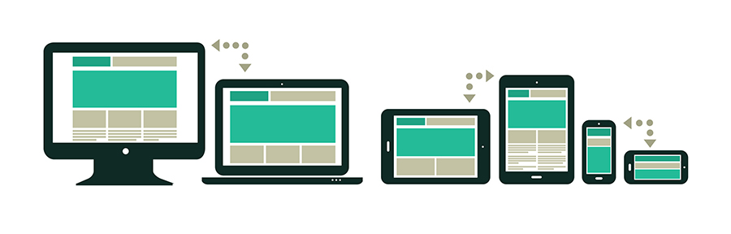
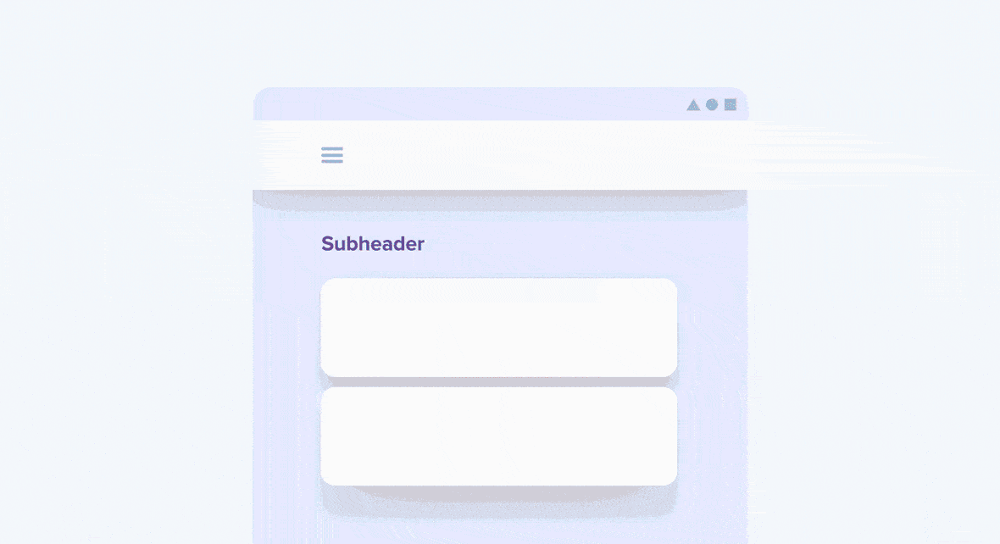

Design Responsivo é uma técnica de estruturação HTML e CSS, que consiste em adaptar o site ao browser do usuário sem que seja necessário definir várias folhas de estilos especíificas para cada resolução, ou seja, é um tipo de design onde o layout fica fluído e variante de acordo com a resolução do usuário.
Esse tipo de design responsivo teve origem em 2010 com o objetivo de melhorar a experiência de navegação dos usuários de páginas web.
Pensando na quantidade de dispositivos novos com acesso à internet que surgiram, os desenvolvedores precisam ter uma preocupação muito maior de tornar seus websites disponíveis para esse público, surgindo então a importância de um website ser bem visto em qualquer dispositivo, independente da sua resolução de tela.
Mais do que uma simples tendência de design, o design responsivo é um conjunto de ferramentas e técnicas modernas que definem como o conteúdo será exibido ao usuário.
Muitos desenvolvedores criam seus websites com códigos sujos, muitas vezes gerados automaticamente por softwares.
É extremamente importante que nessa nova fase de sites responsivos, que os desenvolvedores façam seus códigos limpos e que escrevam apenas códigos que serão usados de fato. Faça códigos o mais simples possível, evitando exageros desnecessários.
Evite:
Procure usar:
Para designs responsivos é necessário ter foco nas condições de width, onde dependendo da largura do conteúdo, ou seja, dependendo da resolução do dispositivo, irá ser carregada uma folha de estilos diferente ou uma folha de estilo específica.

Uma dúvida muito comum é de saber como definir qual tamanho de resolução você deve buscar. Na figura abaixo é possível ver as resoluções mais frequentemente utilizadas.
Resoluções comuns podem ser classificadas em seis grandes breakpoints, você pode trabalhar com elas da seguinte maneira:
| <480 | Direcione a primeira geração de smartphones em modo retrato com <480px. |
|---|---|
| <768 | Use a condição <768px para a maioria dos tablets e smartphones de segunda geração. |
| >768 | Notebooks, desktops e televisores usarão a regra >768px. |
| <320 | Utilize essa largura para baixas resoluções. |
| 768-1024 | Tablets em modo paisagem deverão usar a regra >768px E <1024px. |
| >1024 | Utilize o layout em tela cheia widescreen para desktops, notebooks e dispositivos de altas resoluções >1024px. |
Grids flexíveis usam colunas para organizar o conteúdo. Usam larguras relativas ao invés das fixas para se adaptarem a largura da tela do usuário.

Layout fluido é sempre a melhor maneira de estar pronto para qualquer tipo de tamanho de tela e/ou orientação. Dessa forma pouco vai importar se o usuário está acessando o site por um smartphone ou por uma televisão, o layout irá se adaptar à resolução do usuário.
Você pode usar max e min como limites aplicados a seus tamanhos relativos.
Sua principal função de se usar é para impedir que o layout aumente ou diminua de uma forma errada quando exibido em um dispositivo realmente grande ou pequeno.
Todo os frameworks têm suas regras de desenvolvimento e cada um deles disponibiliza seu manual de uso.
Dentre os Frameworks que podemos utilizar para a ocasião, temos:
A partir das dicas passadas, é possível tornar um site muito mais responsivo e acessível ao público geral, com uma melhor organização do código e a utilização de ferramentas como frameworks.